OUM |
Technique Overview |
||
Method Navigation |
Current Page Navigation |
||
|
|
||||||||
The purpose of this technique is to provide guidance for modeling services.
Service Meta Models and Viewpoint Definitions
No. |
Step | Component | Component Description |
|---|---|---|---|
1 |
Review sections for Service Meta Modeling. | Service Meta Model | The Service Meta Model, Service Contract Meta Model, Service Interface Meta Model, Service Implementation Meta Model sections should be reviewed in preparation for service modeling. |
2 |
Review the section on Service Viewpoints and Models. | This technique is primarily concerned with providing guidelines for creating Architectural Descriptions for Service-Oriented Architecture that are complete and significant. |
In order to model services and their associated artifacts in a consistent and unambiguous way, it is useful to ensure that the created models conform to a common set of principles. To achieve this uniformity, OUM extends the Unified Modeling Language (UML) with stereotypes supported by existing language definitions. This simple set of stereotypes can be applied when modeling services in any given business environment.
Many other modeling languages and notations exist, and while some are suggested by OUM (for example, BPMN in the Functional or Process Modeling technique), other techniques can also be found in customer environments. But even then, it may be possible (if not, necessary) to adapt to the customer's approach to alternative modeling languages/notation even when this results in some loss of functionality (for example, ERD is good for modeling data relationships but is incapable of representing behavior).
UML is typically associated with the Unified Software Development Process (UP), but in general, software engineering processes (SEPs) alone are insufficient to meet the needs of service engineering and other types of models also need to be included. The models presented in this document are aligned with the OUM Service Methodology. This document illustrates their high-level context within a full service engineering environment.
The Unified Modeling Language (UML) has been chosen as the primary modeling language for the following reasons:
While not always the most effective language for all purposes, UML is flexible for conveying architectural and design concepts between stakeholders and for addressing different viewpoints. In the IT industry UML provides a standard for graphically representing common concepts, such as, classes, components, generalization, aggregation, and behavior.
First and foremost, Oracle believes effective SOA services modeling demands new modeling structures to support and encourage good services engineering practices. When a framework, such as UML, fully supports EJB component modeling (for example), you may also assume such practices yield SOA services. Unfortunately, this is not always the case. Therefore, it is necessary to define constraints and describe required supporting aspects of SOA to be able to both support the architect describing the system and enforce (or at least encourage) some appropriate practices to yield a suitably conformant system.
The second concern is trying to prevent “reinventing the wheel”. Has someone else done this work already? Are we at risk of failing to conform to an industry standard for services modeling? While there are a few proposals emerging from a couple of respectable standards bodies, these proposals are incomplete or at least not formalized at this time. In particular, most of the emerging modeling strategies either focus on the Web Services implementations of SOA or simply conflict with the Oracle definition of a service as defined in the Service Architecture technique.
The following describes the high-level service profile package and the details of the stereotypes (potentially constraints and tags) it introduces.
The diagram in the figure below outlines the complete set of extended UML classifiers introduced by the Oracle UML profile for SOA Services. This Services profile package identifies four new stereotypes and their underlying UML meta-class elements.

Oracle's SOA Service UML Profile
The diagram uses UML2 standard notation (solid line with solid arrow which is distinct from generalization, dependency, and other relationships) to denote the extension of existing, standard UML meta-classes for the creation of a specialized instance of a classifier. In the case of the Oracle’s SOA Service UML Profile four new stereotypes are introduced as extensions to underlying UML meta-classes, these are:
This UML extension package defines a service as an abstract container relating the three principle facets of a SOA service: the service contract, the service implementation, and the service interface. The abstract service container carries little information (or operation) of its own but instead ties together each of the contract, interface, and implementation with a single version identifier (i.e., an instance of this service will be a “service version”), lifecycle, type, and scope.
In practice, any classifier can be used to describe the service and its three key facets, contract, interface, and implementation. However the underlying UML meta-classes chosen here serve to highlight the separation of their roles:
The service itself is further supported by enumerations for the properties status, category, and scope. The enumerations of the properties are dependent on the SOA Reference Architecture and Service Engineering framework being used. Those shown here are taken from the Service Architecture technique.
The ServiceLifecycleStatus is special case since it is related to the software engineering lifecycle and, as such, more of a project management concern than a direct attribute of the contract. For this reason it is likely to appear in UML diagrams using tag property notation rather than classifier attributes. The choice of lifecycle states may vary depending on the customer’s engineering and configuration management practices.
Now that we have introduced these specialized classifiers and behavior representation we can use them in our models without specifying all their properties but still knowing the structure implied by the stereotypes. The four specialized elements can now be shown in a variety of forms or used in a number of UML diagram types. The corresponding OUM standard notational elements are shown using the Service Profile package stereotypes in the figure below:
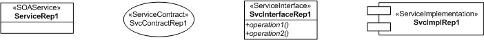
UML also uses icons as an alternative, more visual representation to indicate stereotypes.
The following figure shows some new icons that can be used to represent our service stereotypes that can be added to the already considerable set of icons available within UML2.
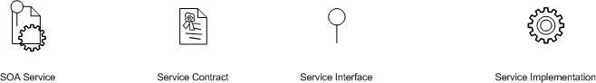
Various classifiers can now be adorned with the icons. The following figure shows the simplest possible case for the use of these icons within basic classifiers with all attributes and operations elided.
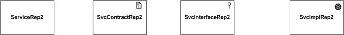
Having formally defined our profile for services we can make a simple statement about how we use it. The following figure simply says that everything we have defined in the Services profile may now be used in our “SOA Project.” We are now ready to start modeling SOA Services.
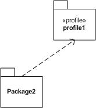
A more detailed description of the four new stereotypes follows with more rigorous descriptions of the three facets of the service, the interface, contract, and implementation.
NOTE: Strictly speaking we have defined “tag” properties in the meta models rather than “meta-attribute” properties for our new meta-classes. The intent of the following models is to use the defined properties as attributes (perhaps with the exception of status of ServiceLifecycleStatus from Service which, as a lifecycle maintenance concern, may be conveyed through a tag value), although the additional formality of defining these as meta-attributes has been omitted for brevity. If this Services profile were to be imported into a tool completion of the formal description would be required.
As can be read from the profile diagram above, the service interface binds the service, while the service contract describes the service. The service implementation, of course, implements the service. These three mandatory elements of a complete service are described in more detail in the following sections.
As we have already said the service itself carries little information. However the “name,” “version,” “owner” and the enumerated attributes “status,” “category,” and “scope” are required to describe the service. Using only these attributes a service may appear in its abstract form in various diagrams leaving the details of contract, implementation, and interface elided.
An instance of a service from a business analyst’s Viewpoint may now be represented simply as a stereotyped class. The following simple example shows the analysis level relationship between two business services:
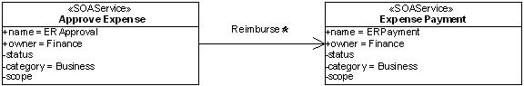
These service examples conform to the constraints of the service meta model because they are stereotyped as a <<SOAService>>. This means it always has a unique set of service contract, interface, and implementation definitions and a small set of its own attributes, although these details are elided from this business analysis level model.
These new stereotypes are the core of the Oracle UML profile for SOA service modeling, although this depiction is highly simplified. Indeed, if the service interface was simply a base class interface or the service contract was merely a use case there would be no need to go to the trouble of creating specialized modeling constructs at all. The stereotypes describing service contract, interface, and implementation are described in more detail in the following paragraphs. A more complete description, with usage guidelines across various views, or SDLC phases, and accompanying examples can be found in the later sections of this document.
The service meta model provides the basis for many service models, viewed from different viewpoints and thereby serving different stakeholder participation at different stages of the service lifecycle. Examples of these different views include a service candidate View which may be used in analysis and design and throughout the service lifecycle enabling traceability of justification, objectives, etc. from inception to operations and ultimately retirement. An instance of a service is represented as a service version and detailed modeling of a SOA platform implementation may involve modeling of a service proxy to convey design details to the service engineer.
As we have seen, the abstract service container ties together the contract, interface, and implementation with a single version identifier. In this way an instance of the SOAService will be a “service version” and a new service version instance is instantiated whenever the Service (producer) Contract, Interface, or Implementation changes.
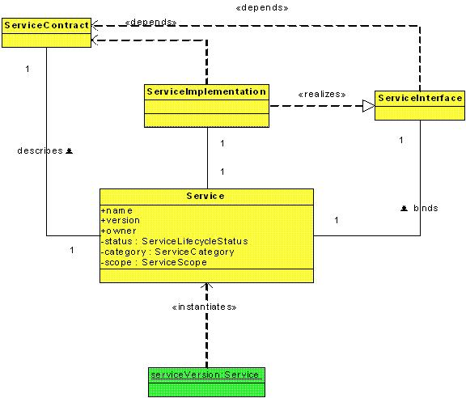
The figure above shows the multiplicities in these relationships and the corresponding instantiation of a service version object.
The figure below shows the meta model details for the service contract stereotype. Here we can see the contract is made up of functional and non-functional descriptions which use policy fragments.
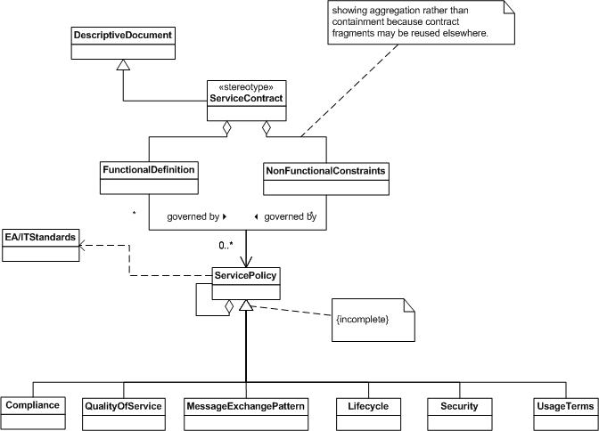
The Service Contract stereotype meta model extends the description of the ServiceContract from the Service Profile making the following key statements:
The requirements (FunctionalDefinition and NonFunctionalConstraints) are contained exclusively by the ServiceContract since they may be reused by other service contracts.
The figure below shows the meta model details for the service interface stereotype. Here we can see the interface is made up of (aggregates) a service specification (another descriptive document) and descriptive metadata, highlighting the human and machine readable aspects of the interface definition.
 a service specification (another descriptive document) and descriptive metadata, highlighting the human and machine readable aspects of the interface definition.")
Service Interface Stereotype Meta Model Detail
The Service Interface stereotype meta model extends the description of the ServiceInterface from the Service Profile making the following key statements:
The usage and lifecycle of this service interface definition is described in the section, Service Interface Viewpoint.
The following figure shows the meta model details for the service implementation stereotype. Here we can see the implementation is made up of (aggregates) various manifestations of contract implementation.
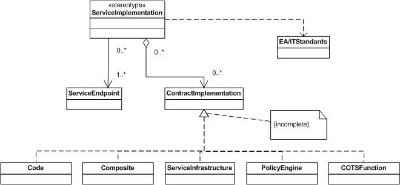
The Service Implementation stereotype meta model detail extends the description of the ServiceImplementation from the Service Profile making the following key statements:
The UML Component was chosen as the base element to represent service implementation because it is defined (see the UML BasicComponents package) as an executable element in a system. It defines the concept of a "component" as a specialized class that has an external specification in the form of one or more provided and required interfaces, and an internal implementation consisting of one or more classifiers that realize its behavior. In addition, the BasicComponents package defines specialized connectors for ‘wiring’ components together based on interface compatibility (see UML 2.1.1 Superstructure Specification in the References.).
The usage and lifecycle of this service implementation definition is described in the section, Service Implementation Viewpoint.
In this section, we define service-specific viewpoints and models that belong to the “service architecture”, complimenting other Architectural Descriptions, such as security architecture, deployment architecture, etc. These Models and Viewpoints can be used to extend any existing EA framework to support the process of SOA service engineering.
Architecture is the organization of components that form a System. In this way SOA is a type of architecture that may be applied to many different Systems and have many Architectural Descriptions.
This technique is primarily concerned with providing guidelines for creating Architectural Descriptions for Service-Oriented Architecture that are complete and significant.
In general, models are made up of diagrams and documents which should be shared and managed within a suitable repository. Ideally the diagrams used to represent the models should conform to an industry standard, or should at least be standardized within a customer environment, in order to be understood by the respective stakeholders.
This document uses UML for diagrammatic notation and overall modeling framework, and where possible deviations from the standard have been avoided. As we have shown in the Service Meta Model section, a service meta model was created outlining the definition of three new UML stereotypes for the three major facets of a SOA Service. These extensions conform to standardized techniques intended for this purpose, but where possible we should constrain the creation of new extensions to avoid conflict with other profiles or dysfunction in associated tools. With the exception of the three stereotype definitions already outlined. We endeavor, in the following sections, to describe all other models of the service architecture using core UML and other standard notations.
This strategy should take into account the culture within the relevant organizations in so far as what the widely used modeling techniques and representations. The models which are used must be understandable and accessible to all of the relevant stakeholders in order to fulfill its purpose.
In addition to the models used to support a regular software engineering project, this document defines sets of Models, organized into Viewpoints. The Viewpoints are aligned with the needs of various Stakeholders, throughout the lifecycle of a service, and should be used to instantiate Views where appropriate to a particular Architectural Description.
Examples of these Service Modeling viewpoints follow:
These example viewpoints do not include traditional models, and it is expected that traditional models are included as part of the formalized viewpoints during an engagement once it is known what software development approach the customer utilizes.
It is not expected that these example viewpoints be utilized as is. It is expected during the course of an engagement that these viewpoints will be collapsed, expanded and additional viewpoints be defined.
These service-specific viewpoints are not mandatory for every service Architectural Description (nor indeed are the full set of UML models required).
This section provides a description of the Service Specification viewpoint.
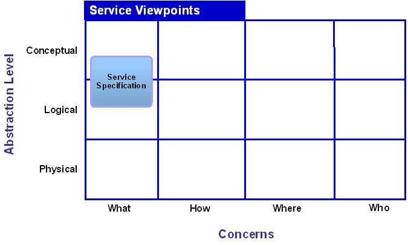
| Typical Stakeholder(s): | Concerns: | Models: |
|---|---|---|
|
|
|

Service Contract Meta Model
The meta model for the service contract has already been described in the section, Service Contract Meta Model. In this section, we describe the lifecycle of the contract, where the information comes from and how it is used.
The World Wide Web Consortium (W3C) document mapping the Web Services Architecture (WSA) to the Organization for the Advancement of Structured Information Standards (OASIS) SOA-RM makes an interesting point about the use of the word ‘contract’: For further reading on the W3C Web Service Architecture and OASIS, see the References section.
“’Contract’ may not be the best word since a contract is defined in common terms as some sort of agreement to two parties. It is really a ‘contract offer’ or ‘contract offer terms’ prior to it being agreed to. If the consumer examines it but does not agree to it, it technically is not a contract. ‘Policy’ may be a better word to use than contract.”
The Service Architecture technique definition of a contract resolves this issue by defining the service contract as agreement between the service provider and the service infrastructure. Then a consumer contract (aka usage or consumption agreement) becomes an agreement between a consumer and the service infrastructure. This approach, of making the infrastructure a sort of contract intermediary avoids the conflicts arising from the different viewpoints of provider and consumer.
An example of the way this works would be a Short Message Service (SMS), offered by a telecom provider as a wholesale service to applications providers wanting to include mobile messaging as an added value in their own applications. In this scenario, the telecom provider establishes a contract with the SOA infrastructure to deliver a global maximum rate of 100 text message per second and individual consumption agreements (perhaps a part of broader SLAs) with its customers of varying message rates totaling up to the global maximum (this of course is a highly simplistic scenario). The separate provider and consumer “contracts” may now be handled in different ways. The global maximum rate, contracted by the provider to the SOA infrastructure, may be strictly enforced to protect the underlying Systems from overload, while the transgressions by the consumers are merely audited and reported to the appropriate business unit.
The service contract describes the requirements (functional and supplemental) and various types of policies governing the use and limitations of the service. The contract is used to drive the service implementation in addition to the interface specification.
The Service Contract is created as an output of the Service Definition workflow step of the Service Delivery phase. In this stage the Business Analyst is gathering and refining requirements from the business community. Business requirements can take many forms but ultimately they are the “descriptive documents”. Many requirements are supplied from the Service Analysis tasks, in particular, the Enterprise and Business requirements (see Enterprise Requirements Management technique). EA/IT standards, and potentially other document (such as regulatory requirements, etc.), are also input to this workflow step.
Requirements themselves are often described using simple “shall” statements to express functional and supplemental business and IT operational requirements. The typical format of a requirements statement is:
<id> the <system> shall <function>
For example the statement “304: the PeopleSoft Application shall provide validation of ER line-items” is a requirements definition.
Now when dealing with Service requirements we can modify this statement pattern to take the form:
<id> the <service> shall <function>
An example of a service requirement statement might now be “123: the ERVerifyItems service shall verify a line-item from an ERCanonicalForm”.
Use case requirements and policy definitions are later used by the designers and developers in both service interface realization and service implementation.
The service contract is critical to service discovery, runtime as well as design time. It is therefore also critical to enable service reuse. A related concern is traceability of the various forms of requirements, contract specifications and associated models. The contract documents (covering both Service Contract and Service Consumer Contract) should have traceability to some combination of Business Process, Functional, or Data requirements.
These issues demand careful planning of the engineering infrastructure needed to support the service lifecycle.
Without that, the specifications upon which the services are based and built are likely to suffer from scope creep, inconsistencies, and backtracking.
The service contract may have constraints derived from a Business Motivation Model (BMM) and/or other business analysis descriptions, such as use cases models. These constraints indicate what the service contract is intending to accomplish, and how to measure success.
The service contract may also realize use cases that capture additional information about the high-level functional and supplemental requirements for the business process from the perspective of the key external stakeholders or actors.
The following figure shows the portion of the contract meta model covering the requirements documents gathered during an early iteration of an analysis workflow step. As we progress from Service Definition and Design to Service Definition and Design (see SOA Core Workflow View) the remaining portion of the Service Contract meta model will be addressed (see Service Contact Policy portion below). Here we can see the contract is made up of FunctionalDefiniton and NonFunctionalConstraints descriptions.
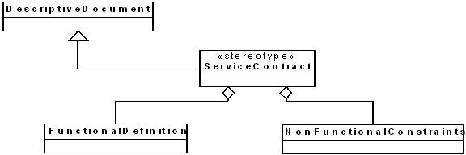
High-level contract requirements of this form may be collected using the simple “the system shall” kind of statements or in a simple form such as the template shown below:
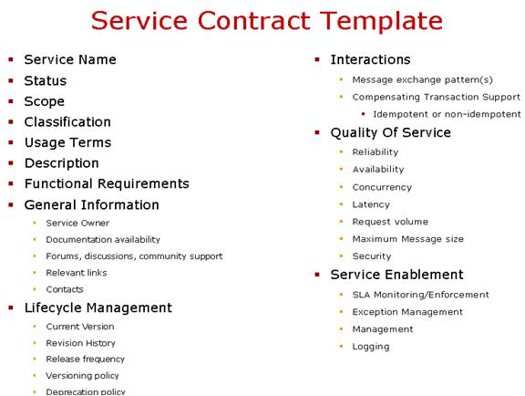
This type of contract information should be collected during Requirements Analysis and should be referred to throughout the service lifecycle to ensure compliance. Contract documents of this type should be published and maintained through some suitable form of repository, ideally a metadata repository. During design, some aspects of the service contracts will be assigned for implementation to the service infrastructure. Some potentially will be assigned to a policy engine, while other aspects of the contract will be reused from existing applications, while yet others may concern custom development. These manifestations of the service contract fragments can be seen in the Service Implementation Model.
The following section shows a UML based approach to documenting service contracts using use cases (and use case specifications) in accordance with the Oracle UML Profile for Services.
In contrast to UPMS and other standards body attempts to model services, OUM models the Service Producer Contract (for service provision) and Service Consumer Contract (for consumption) using UML system use cases. Use case actors represent the roles that are adopted by the entities that interact with the System under Discussion (SoD), in this case with a system leveraging a service infrastructure.
A (system) actor specifies a role that some external entity adopts when interacting directly with the SoD, which may be a human actor or a role played by another system or application that touches the boundary of the SoD (in UML 2 the System boundary is referred to as the subject). Especially in case of systems integration, the actors communicating with the SoD often are other systems as in most cases, human actors do not interact with a services in one single setting (directly or indirectly). The primary actor is then the calling system.
Be aware that the primary actor is the one having an interest in the successful completion of the use case. So even if a human actor communicates with a service indirectly, it still should be considered to be the primary actor as long as the service belongs to the SoD. An example where a human actor communicates indirectly with a service but still is its primary actor, is when the SoD communicates with the human actor directly, but calls one or more of its own services in the background. Even though the human actor is not directly calling these services, he still is the primary actor for them. There are exceptions, for example, a human actor communicates directly with a service where a service is directly called from a screen. However, since a browser might be considered to represent an end user rather than a system, making some services accessible by end users (for example, using technologies, such as, REST, and SOAP via JavasScript or AJAX). When the service is not part of the SoD, the external system providing that service, becomes a secondary actor in the context of the SoD.
Use case diagrams provide a valid means to represent the relationships between the human and system actors (provider or consumer) within the context of a SOA infrastructure. The diagram below shows an arbitrary example of these relationships.
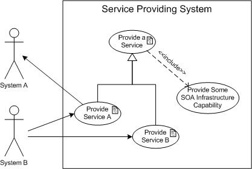
Use case diagrams provide limited information about system (and their services) interactions. In the figure above, we can see two external systems. System B is calling two use cases (services), Provide Service A and Provide Service B, while System A (as a secondary actor) is providing functionality to the use case, Provide Service A (probably, also as a service). Both use cases reside within the context of the system with the name, Service Providing System. A generalization of these use cases, called Provide a Service, includes some capability, called Provide SOA Infrastructure Capability, from the service infrastructure and may contain other enterprise-wide requirements.
The Service Contract use case diagram may be used to describe a hierarchy or contract parts within the context of the service infrastructure or to represent the interactions between providers and consumer needs during a requirements gathering activity. However, the UML use case diagram should not be used to represent functional decomposition since it is not suitable for that purpose.
A more detailed (and more useful) representation of the service contract can be made using use case specification document. A template for the specification document is shown below.
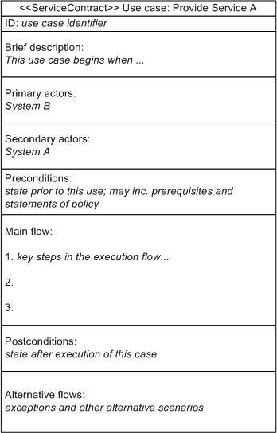
The use case “specification document” is not actually part of the UML specification but it is a commonly used format for describing the meaning behind the use case diagram. This document format can be easily used to provide the “Descriptive Document” form of the functional and supplemental contract elements; it may also be helpful in describing some more detailed aspects in the lower portion of the contract meta model (see figure below).
Note the stereotype “ServiceContract” servers for both Producer and Consumer (see the section, Service Operations Deployment Viewpoint) Contracts.
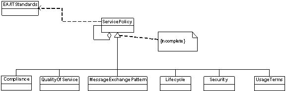
Service policies are reusable, compose-able descriptions of behavior used to specify service contracts. A service policy may be enforced directly through a facet of a service interface (an Interface Facet), or indirectly through specified observable behavior.
Service Policies should be documented in human consumable format and should comply with enterprise, industry, or legal mandates. Policy documents should be traceable to both (1) the Business Motivation Model and (2) their realization in interface and service implementation.
Service policies may be realized in at least four distinct forms and this may be taken into account when describing policy requirements:
Policy may be arranged in connected hierarchies enabling related policies to be brought together to provide a courser grained policy, or machine process-able meta-data realizations of policy to be associated with human-readable documents.
The following sections elaborate further on various types of policy shown in the diagram fragment in the figure above. This list is not intended to be an exhaustive set of policy types.
Compliance policies can take the form of industry or enterprise standards, or regulatory and other legal mandates.
Another form of compliance document manifests in a specification from the Web Services Interoperability industry consortium (see References). In order to improve interoperability of Web Services, the WS-I publishes a set of “profiles”. WS-I profiles correspond to core Web Services specifications (for example, SOAP - Simple Object Access Protocol, WSDL- Web Services Description Language, etc.) and apply additional requirements to restrict their use to improve interoperability. The WS-I also publishes use cases and test tools to support deployment of profile compliant Web Service.
Statements of Quality of Service (QoS) can take many forms but they generally refer to supplemental requirements arising from specific, traceable business requirements. QoS can refer to availability (for example, “the service must be available 24x7”); performance requirements (for example, “the comms System must provide dial-tone within 100ms”); transaction integrity (for example, “debit account only upon completion of successful cash withdrawal”), etc.
Some of these statements of QoS can be realized through metadata expressions in the form of Web Services specifications (see References). Examples are:
Basic messaging models describe a one-way flow of information but since we need to facilitate a consumer-provider interaction most services operate using a request-response Message Exchange Pattern. Due to the stateless nature of asynchronous document exchange patterns (generally preferred over the synchronous, blocking, RPC style) some form of message correlation is typically needed to associate a response with its request. Correlation may be provided by the application (in which case custom identifiers are embedded within the body of a message) otherwise a Web Services standard may be used (such as WS-Addressing) to pass identifiers via a message header where they can be processed by the SOA infrastructure.
Besides the one-way and request-response Message Exchange Patterns already mentioned other examples include:
Other considerations arise from the choice of MEP including:
Many of these considerations can be addressed in standardized ways by the SOA infrastructure, rather than through costly custom application solutions. Using WSDL 1.1 each “operation” (of a “portType”) can send and receive at most one message in each direction and therefore is only able to describe the following four message exchange patterns:
The first two MEPs (referred to as inbound operations) are most commonly used while the last two (outbound operations) are not fully supported by WSDL but require the additional support of WS-Addressing in order to bind the operations and thus determine where to send such messages. WSDL 2.0 introduces more message exchange patterns although full description of WSDL and message exchange patterns is beyond the scope of this document.
Ideally message exchange patterns will be described by the service contract using human readable text while the formality of WSDL and WS-Addressing etc. will be developed during the realization of the service interface.
Lifecycle is included here to represent policies that may be written to govern the lifecycle of a service. In this context, lifecycle does not refer to the ServiceLifecycleState property described in the service meta model.
Specification of security requirements overlaps somewhat with QoS. However, security is such a significant concern (to most organizations) that it justifies extensive handing by itself. The full subject of security, as it relates to SOA, is beyond the scope of this document (refer to SOSA for further information on SOA security).
Beyond the specification of security requirements, SOA implementation is typically concerned with the following aspects:
For Web Service (SOAP) services, message-level security profiles can be represented using the WS-SecurityPolicy standard. Authentication, or access control, policies may be represented as entitlements policies, such as those used by ALES. Policies for other aspects of security, such as auditing rules, may require custom-made policy definitions.
Web Service Security standards are specified by the OASIS Web Services Security Technical Committee (WSSTC) and include the following components:
Specification documents can be found in the OASIS document repository.
Usage terms describe the constraints that might be applied to the usage of an offered service. A service might be offered through various service levels (for example, “bronze”, “silver”, “gold”) depending upon cost or other factors.
This section provides a description of the Service Interface viewpoint.
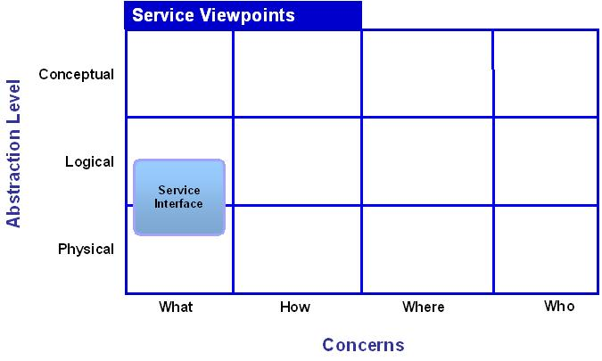
| Typical Stakeholder(s): | Concerns: | Models: |
|---|---|---|
|
|
|

Service Interface Meta Model
The meta model for the service interface has already been described in the section, Service Interface Meta Model.
The service interface exposes the service operations to the service consumers while hiding all others aspects of its implementation such as platform technology, internal algorithms, physical location, etc. It is the means for interacting with a service. It includes the specific protocols, commands, and information exchange by which actions are initiated that result in real-world effects, as specified through the service functionality portion of the service description. The syntax of the interface should be represented in a standard reference-able format that prescribes the information to be provided to the service in order to access its capabilities and interpret the responses. This is the service’s information model. The existence of interfaces and accessible descriptions of those interfaces are fundamental to the SOA concept.
Referring to the SOA Core Workflow View, the physical Service Interface is created as an output of these three tasks; Design Architecture Description DS.040, SOA Implementation Strategy (DS.070), Service Design (DS.120). The primary input is the Service Contract and associated requirements and analysis documents: Use Case Model (RA.023), Use Case Details (RA.024), Analysis Model (AN.050), Behavior Analysis (AN.060), and (when appropriate), Business Rules Analysis (AN.070). The output of this workflow step is a Service Interface specification taking the form of descriptive documents; ideally using UML interaction diagrams (see Interface Specification). In later iterations more detail is produced, perhaps to the level of modeling descriptive meta-data, for example, using class diagrams to model WSDL definitions (see Descriptive Meta-Data). As with Service Contract and Implementation, EA/IT standards, and potentially other document (such as regulatory requirements etc.), are also input to this workflow step.
The interface is bound by contract and must conform to standards. The conceptual interface is a specification describing how to interact with the underlying service. The realization of the service is part of the service implementation.
According to the Oracle UML Profile for Services, the Service Interface is based on the UML interface meta-class and can therefore be represented simply using the UML box with two compartments containing the stereotyped name and the operation names. This is useful for referring to the Service Interface while inferring its underlying structure is specified by the Service Interface meta model. During Service Analysis and Service Design, the underlying structure is described using standard UML techniques. The service interface stereotype is elaborated in the meta model (duplicated in the figure below) that is made up of specification documents and metadata, both of which may be supported by UML diagrams.
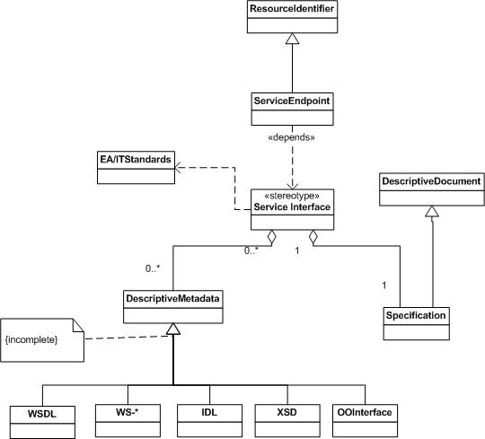
The service interface is made up primarily of operations (service method) and specifications. It also has an endpoint, which is required for discovery. In UML, the interface classifier is distinguished from a regular class because it has only two compartments rather than three, i.e., it has no attributes.
Interfaces specify the totality of a message that is communicated to and from a service. They are composed of representations, which are a symbolic or digital realization of some kind of conceptual model or specification, whether a transport protocol, application protocol, data format, or information conforming to a schema.
Representations also include references to information outside the boundary of an interaction, such as primary keys, endpoint references, or URLs. All these are denoted as resource identifiers.
The interface specification comprises human readable documents which elaborate on the specifications for the requirements established in the Service Contract.
Although UML provides a special element for use case realization it is rarely used because it is a trivial, one-for-one copy of the use case elliptical symbol with a dotted outline. Early iterations of analysis often make use of interaction diagrams, for example a simplified sequence diagram, such as the one shown below:
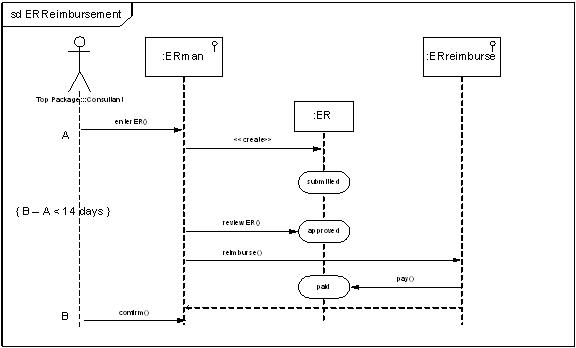
Sequence diagrams represent the interaction and sequence of events or operations at a level of granularity which is far beyond what can be achieved through a use case. The level of granularity and detail can be varied as needed making them an extremely useful and powerful representation.
While using a sequence diagram for initial use case realization during Analysis, we make a number of simplifications, eliding details such as class instantiation on the lifeline, in order to show the state invariants of an object (in this example an Expense Report). When an instance receives a message it may be caused to change its state; these changes can be represented in a sequence diagram with state invariants using round-edged boxes on the lifeline (in this case showing “submitted”, “approved”, “paid” state changes for the ER). In the example in the figure above, we convey a number of important pieces of information, building on the use case for Expense Report submission. The ERman is responsible for the user interface, but it is also the service interface responsible for the creation and approval operations of the ER. The lifecycle of the ER is the primary subject of this diagram showing its high-level state changes, and corresponding operations, taking it from its creation to payment. A constraint (business rule) is represented here also, showing the requirement to limit the elapsed time, from submission to payment confirmation, to 14 days.
The horizontal lines with arrows in the sequence diagram are drawn primarily to represent messages invoking the interface operations; dotted horizontal lines represent reply messages. The vertical lines are lifelines representing the passage of time from top to bottom. In this form of the UML sequence diagram, changes in state are represented by round-cornered boxes. Constraints, such as specific requirements of the Service Contract, may be written inside curly braces.
Sequence diagrams of this type are dynamic and are expected to evolve through a project lifecycle gathering more detailed information through various iterations. The UML Sequence diagram also offers a number of other features including detailed modeling of message flows and lifeline activations that are useful for modeling more complex interactions. The model shown in this section will reappear in other sections of this document, in slightly different forms, representing different levels of detail throughout the service lifecycle as well as during Service Design.
The service interface meta model should be abstract because a service architecture is supposed to be independent of any particular technology implementation or architectural style. However, since the service interface will commonly be realized using Web Services, the following examples use Web Services definitions to illustrate the diagramming strategies appropriate to this Model. It is worth noting that in cases where other interface definition technologies are used (such as the CORBA IDL) similar diagramming strategies should still apply. However, web services, as the most common SOA technology, was chosen here to provide a tangible foundation to ground the following descriptions.
Specifications of Functional Requirements
The basic functional capabilities of a service interface are typically described at a meta-data level using Web Services Description Language (WSDL). Various other Web Services specifications, WS-Policy in particular, are used to describe the supplemental capabilities of the service interface. First, we will show modeling techniques for the functional meta-data of the service interface based on WSDL (Web Service Definition Language).
Attempts to develop a standardized Interface Definition Language (IDL) have been made since RPC became popular in the early ‘90s the Open Software Foundation (OSF) Distributed Computing Environment (DCE). Most IDL’s required a homogenous environment and even the OMG’s CORBA, the most successful platform independent IDL, suffered interoperability issues. Web Service Definition Language (WSDL) was created by the W3C to be a truly interoperable IDL, with roots in early SOAP description language efforts from both IBM and Microsoft, and drawing from a decade of experience in the field. (WS-I may be used, or even required, to constrain Web Service specifications to improve interoperability).
The current WSDL version 1.1 was originally conceived towards the end of the year 2000 and is now used extensively to describe Web Services interactions. WSDL has been very effective at separating the concerns of service descriptions thereby supporting the underlying objectives of loose coupling, reuse, and platform independence providing isolation from implementation concerns.
WSDL provides both an abstract and a concrete definition of the service interface functional capabilities. These two separate aspects may be developed independently (for example, in Analysis and Design) and may even be used to describe enterprise standards using abstract interface templates. The WSDL Model is commonly said to separate the descriptions of what the service does, how it does it, and where it can be reached. WSDL version 1.1 is represented below, showing this separation of “how, what, and where”.
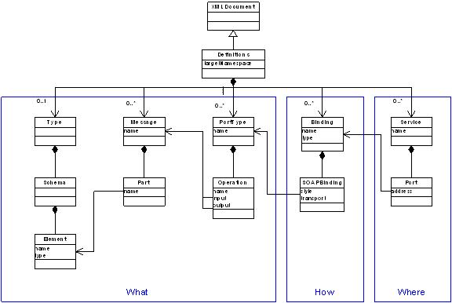
WSDL offers a concise, syntactic, interoperable, meta-data description of the functional operations provided by a service, the protocol for accessing it, and where it can be found. Using WSDL the interface for a business service is specified as a collection of "portTypes."
Some of the details of the WSDL Model have been elided from the diagram in order to focus on the key capabilities for service interface description. One element not shown here is the Documentation container which may be applied to any of the five top-level elements for human consumable descriptions and provides a potential repository for our descriptive specifications. The top-level Definitions element of the WSDL document identifies a target namespace which is the intended namespace for the resulting message exchanges via the interface. The top-level elements contained within the WSDL Definitions breakdown as follows:
The basic interface operations and message structure can be seen in the diagram below (the “what” it does portion of the diagram). This is the portion of the WSDL Model we use to describe the syntax of some of the functional requirements of the service contract for the service interface specification.
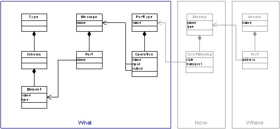
The "What" (or abstract) Portion of the WSDL Model
Using a class diagram, following this basic form of the abstract portion of the WSDL model, we can model details of the descriptive meta-data of the Service Interface showing data elements, messages, and interface operations.
Extending the interface description from its abstract definition to a concrete one, the binding and service port (endpoint) can be added to the overall picture of how and what the interface offers. This portion of the WSDL Model will be used in the Service Design section.
For completeness a corresponding Model of WSDL version 2 is shown in the following figure. When creating this document, WSDL 2 has limited adoption due to the newness of the specification and proliferation of WSDL 1.1. However, it is useful to see that, in addition to some simplification, the separation of concerns and the emphasis on the interface prevails. Again much of the detail of the specification has been omitted from this diagram.
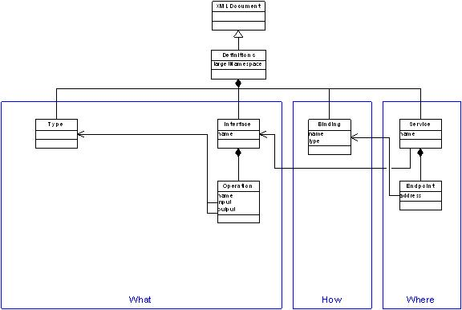
In WSDL, version 2 the input and output parameters of the interface operations are simply described by schema Types. The Message element has been dropped since its original purpose was largely to provide support for the distinct document v. RPC styles of SOAP based Web Services (the latter style is no longer recommended although still achievable using extension mechanisms).
While WSDL 1.1 only enabled four Message Exchange Patterns (one-way, request-response, solicit response, output only), WSDL 2 provides for new MEPs with ordering and addressing capabilities supported via the binding.
The service in WSDL 2 is now restricted to describing a single interface, albeit with the option for multiple endpoint addresses.
WSDL is one of a number of options for describing the realization of the interface syntax for functional use cases identified by the service contract. However, it does not describe the supplemental requirements nor the semantics of the operations.
Specifications of Supplemental Requirements
Web Service Policy (WS-Policy) was created separately from WSDL and is intended to provide a generic framework for describing supplemental requirements for any XML-based subject. The basic framework is shown in the diagram below.
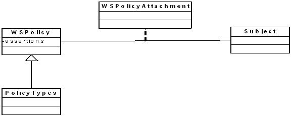
WS-Policy is a container for assertions which describe the capabilities and constraints of the subject. The policy types shown here are just a small cross-section of the growing set of policies available in the Web Services domain. Currently, these include:
WS Policies are reusable groups and fragments of policy definitions that may be associated with any number of subjects via the WS-PolicyAttachment mechanism. Using the attachment mechanism, meta-data statements of supplemental policy can adorn WSDL elements, including the port type (interface), binding, and endpoint enabling the WSDL document to aggregate statements of both functional and supplemental types.
Supplemental Policies may also be applied to UDDI definitions for use during design and discovery. Finer-grained policy negotiation may also be achieved through late binding at runtime using WS-MetadataExchange.
We can now show the service interface deriving functional and supplemental ("non-functional") aspects of the contract as shown here:
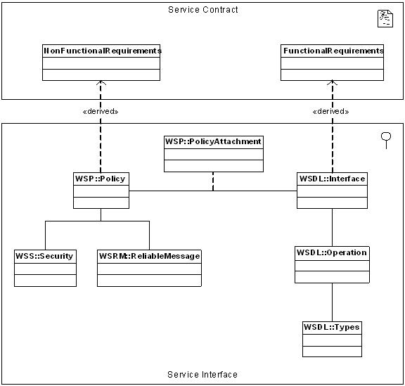
In this diagram the interface and policy elements have the respective Web Services namespaces identified (using the UML “::” package notation) indicating the design choices for interface specification. Other interface technology specifications should follow a similar pattern. Here we have used the WSDL 2 Interface for simplicity rather than naming Type, Message, and PortType elements of WSDL 1.1 for our service interface representation.
Specifications of Semantic Requirements
So far we have described the syntax and functional capabilities of the service interface using WSDL, and the supplemental requirements using WS-Policy, but the semantics of the interface operations are only implicit in our meta model for the service interface. Emerging technologies, such OWL-S and RDF, provide options for semantic descriptions and may be applied to the service interface to complete its definition.
This section provides a description of the Service Design viewpoint.
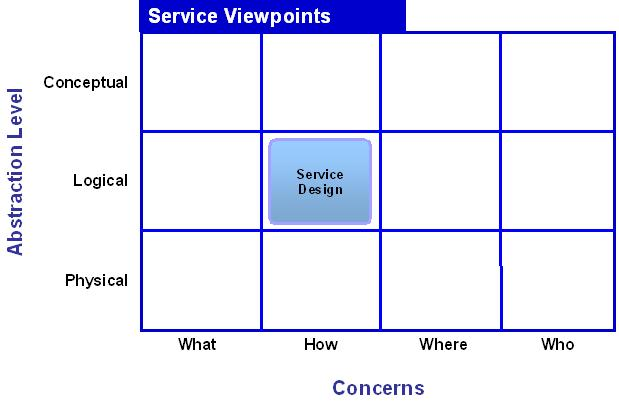
| Typical Stakeholder(s): | Concerns: | Models: |
|---|---|---|
|
|
|
The design activities of any project focus on “how” requirements are going to be met given a specific platform. This fits nicely with the breakdown of the WSDL Model into “what” (requirements description), “how” (service design), and “where” (service implementation and/or runtime), but it also applies more generally to software engineering practices.
Service Design is a more detailed step in the SOA Core Workflow View, Design Architecture Description DS.040, SOA Implementation Strategy (DS.070), Service Design (DS.120) elaborating on the design of the service prior to implementation. The primary input of this workflow step is the Service Contract and Service Interface specifications. The output is a Service Design Specification with sufficient detail of messaging strategies to support Service Implementation.
In a project’s Design phase, UML Interaction Diagrams are typically used to elaborate the physical details of use case realization. The second of two forms of UML 2 Interaction Diagrams is shown here representing a later iteration of use case realization flowing from Analysis into Design (notice the intentional similarities to the diagrams in Interface Specification section above).
The following Interaction Diagram is an alternative representation for use case realization in design using a UML 2 communication diagram (for reasons unknown the UML standard still labels these diagrams with the prefix “sd”).
 is an alternative representation for use case realization in design using a UML 2 communication diagram (for reasons unknown the UML standard still labels these diagrams with the prefix “sd”).")
Service Interactions (UML Communication Diagram)
In constructing a communication diagram we drop the lifelines of the sequence diagram in favor of arrowed lines with sequence numbers representing operation calls via messages between Services or other components. The actor in this particular example refers to a human role (presumably interacting with a presentation service), but may be easily replaced with a consumer “system” when depicting machine-to-machine interactions.
In the figure above, we can enumerated steps (and sub-steps using point notation) in an Expense Report Creation and Payment process. In this design stage, we have adorned the service elements using the Service Implementation icon since these are best represented by UML components during design.
This form of interaction diagram says little about the lifecycle of service instances, omitting the UML lifeline altogether, but offers important information about event sequencing, and the involvement of service interface operations and potentially messages exchanged.
As with the modeling of standard object-oriented software, each of the various modes of representation represent some aspect of the overall system behavior which does not appear in most of the other representations.
Regarding the WSDL mentioned at the beginning of this section, the “how” aspect of design is highlighted in the WSDL Model shown below.
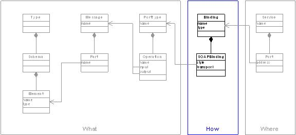
The service provider specification is used during Design to represent the service operations provided by the service and their protocol bindings. Continuing the WSDL based description of the Service Interface in the Descriptive Meta-Data section, the Service Interface can now be extended in the Service Producer Design Model to show the nearly complete, concrete definition of the interface. Here the diagram tells us the Service Interface has a concrete binding. Other Web Services descriptions may be appropriate to include at this stage.
Once again the WSWL structure may be used to create a class diagram describing transport binding specifications for the Service.
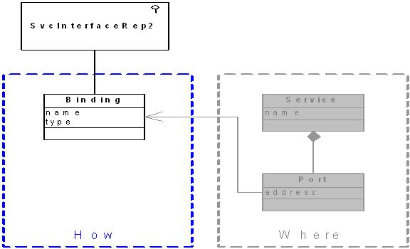
Other variations on this theme without the direct references to Web Services technologies, may be derived from this pattern if necessary.
The UML component is a structured classifier, which means it has in internal structure having parts with roles and connectors. This is another useful diagramming element used to emphasize the roles of the service bindings with UML 2 ports adorned with appropriate constraints (it is important to note the distinction between UML ports and WSDL ports). Since our UML Profile establishes the Service Implementation as a component we are starting to overlap with the Service Implementation viewpoint. However, this is justified as we are making a distinction between protocol bindings and endpoints in design.
The figure below shows an example of the internal components of a Service Implementation, along with its external bindings, using component with ports notation.
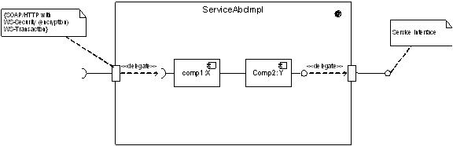
Using the structured classifier we can show the internal workings of a class, in this case a Service Implementation. The bounding box separates the internals of the Service from the rest of the system. This can be useful for highlighting the autonomy of the Service. The small rectangles on the boundary line are the UML ports representing the interface bindings which can be adorned with constraints documenting how it is to be used. The lollipop notation represents the interface and a distinction is made between interface receptors (half circle on a stick) and providers (full circle on a stick).
The internals of the structured classifier may contain any classes, although the part:type naming scheme of the part is intended to specify the role of an instance of the internal class. In any case, we can model the internal workings of the Service Implementation and we generally do just that in associated viewpoint. More importantly, at this stage we show the interfaces of the internal components delegated by the Service Implementation using the dotted, directional line dependency notation (and appropriate stereotype). This shows the wrapping of some application functionality by the Service Implementation. Finally the structured classifier component is stereotyped using the appropriate Service Implementation icon.
The Service Interfaces in this diagram have been reduced to the lollipop notation and no visual distinction is made between the internal provided/required interfaces and the service specific ones exposed outside the boundary of the service implementation (other than the note attached to the producer interface to the right of the diagram). Implicit in this diagram is the non-SOA nature of the application components internal to the implementation. Their delegated interfaces may be exposed through Enterprise Service Bus proxies. It is here that the UML 2 port notation is used to bind the exposed service interface to such constraints as transport protocols and implementations of policies through the SOA infrastructure.
With the myriad of options available for addressing concerns, such as security, discovery, etc., it is important to clearly state what facilities are to be used for what purposes. The diagram below shows an example of a high-level representation of a sub-set of Web Services capabilities that may be used in Service Producer Design to facilitate service description, discovery, quality assurance, etc.

Service Design Packages
This section provides a description of the Service Implementation viewpoint.
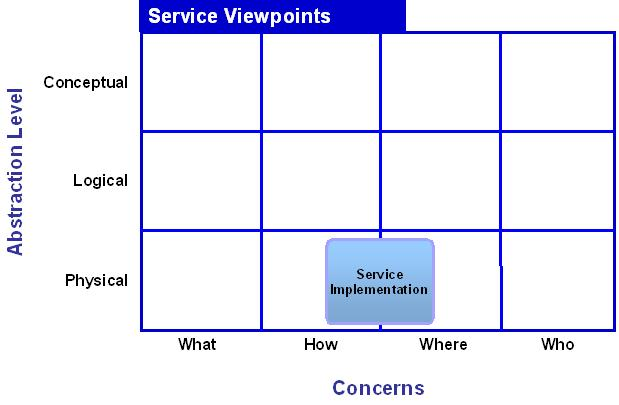
| Typical Stakeholder(s): | Concerns: | Models: |
|---|---|---|
|
|
|
Service Implementation Meta Model
Service implementation really starts to come to life during traditional design phase in which analysis use cases are realized along with detailed interface definition. It is at this stage that subsystem components are considered to have enough detail to draft simplified views of the service deployment to establish an understanding of what components will be needed to make the System function as a whole.
The service implementation encompasses all software (or software configuration) manifestations of the service including custom code, commercial and legacy application components, as well as those aspects of a service implemented through the service infrastructure. An example set of these service realizations appears in the next figure further down.
The Service Implementation viewpoint is distinguished from the Service Producer Design by the level and breadth of detail involved. It is here that we need to show which requirements of the Service Contract will be implemented in traditional code versus infrastructure. For example, should business rules be implemented in code, a dedicated rules engine, the service bus, or a BPM engine, etc. Service endpoints (WSDL ports, the “where” of the WSDL) may also be specified here.
In terms of the engineering process we can clearly see in the SOA Core Workflow view that Service Implementation is its own workflow step following Service Design within the context of the Service Delivery phase. Analysis and Design documents are taken as input from Service Contract and Service Design stages and the Service Implementation specification is the output. As with Service Contract and Interface, EA/IT standards, and potentially other document (such as regulatory requirements, etc.), are also input to this workflow step.
Traditional modeling and software engineering process techniques are most likely to be interwoven with Service Engineering at this stage since some aspects of Service Implementation may involve plain-old software development. The methods for software engineering are well established and beyond the scope of this document. However, it is important to understand that software and Service engineering processes and documents must be carefully coordinated and kept synchronized to avoid conflict of interest.
The service implementation implements the service interface and the remainder of the service contract (functional and supplemental requirements) not specific to the interface.
The service implementation meta model is surprisingly simple. The reason for its simplicity is that all the details of the service interface are inherited so it is not necessary to reproduce them here. Similarly, the dependency on the service contract has already been shown in the profile package.
This figure shows the service implementation meta model. Here we can see the realization of the service interface as indicated in the service profile. Similarly the physical manifestation of the contract is represented here regardless of whether it is to be implemented in service infrastructure, an external policy engine, or within an application.
Service Implementation Stereotype Meta Model Detail
A key aspect of the implementation is its binding, which is necessary to support service discovery. The Enterprise Architecture / Information Technology Standards are required to ensure consistency across service implementations.
A simple example of a Service Implementation component is shown using three alternative representations below. The component representation is particularly useful in Design and may take various forms according to the information being conveyed.
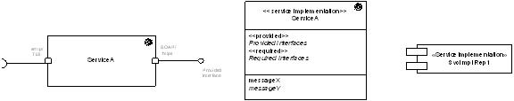
The simpler form of the service implementation component (shown right) uses the classic UML component element notation with the simple additional Service Implementation stereotype to clarify its additional meaning. The class element (middle of three representations) is used to show a service name along with required and provided interfaces and messages (in the attributes compartment). The more detailed, design-level, component representation (shown left) uses an alternative notation for required and provided interfaces receptors and elaborates the associated interface realization using UML ports to indicate protocol and/or message format implementations.
Also, in this example, one port has private, and the other public visibility, distinguished by the position of the rectangle inside the bounding box versus on the boundary line. This subtle distinction could be useful for representing “public versus private” Service Interfaces. Either representation can be stereotyped using the double angle bracket notation or our Service Interface icon (the class representation in the example carries both forms which is redundant although not incorrect).
Combining the notations we have so far, we can show the relationship between the service implementation and its provided and required interfaces. See the following figure:
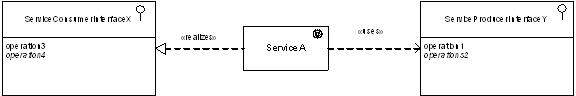
In the figure above, the relationship between a service implementation component and its provided and required interfaces is shown using realizes and uses dependencies respectively (these are the dotted lines, distinguished by their different arrowhead styles). Service Interface representations have already been covered in their own section, and they are shown here using the classic, two compartment box for name plus stereotype (icon in this example) and operations.
In this next figure, we show the internal structure of the service implementation using parts within a structured classifier.
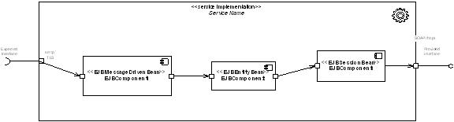
The structured classifier was introduced and briefly explained in the Service Producer Design section. Here we see ports (small rectangles on the boundaries of the classifiers) representing the protocols of the various components. Only the exposed Service Implementation component ports are named in this example. However, elements of this type may be used to provide considerably more information about the internal design of the Service Implementation. The Service Implementation component itself is (unnecessarily) stereotyped with both angle bracket notation as well as icon.
In this example, we have used standard component icons in conjunction with stereotypes from the UML EJB Profile to show some of the internal implementation details of the Service Implementation.
Legacy access Service Implementation may also be represented using the component notation. See below:
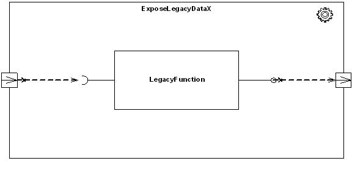
In the element shown in the figure above, we see the internal details of an encapsulated legacy function with its own interfaces delegated to SOA compliant interfaces (shown here as ports with direction indicators) at the boundary of the service implementation.
To complete the WSDL Model introduced in the Descriptive Meta-Data section, the figure below shows the “where” portion of the service description which specifies the service endpoint, identified here in Service Implementation.
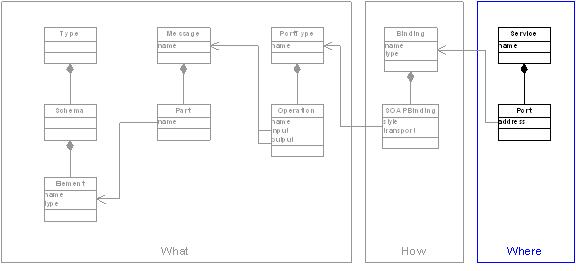
This section provides a description of the Service Composition viewpoint.
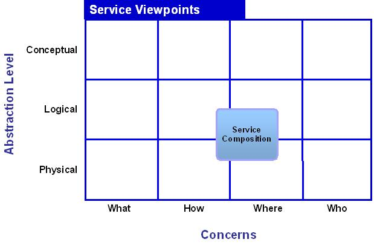
| Typical Stakeholder(s): | Concerns: | Models: |
|---|---|---|
|
|
|
Service Composition in the context of Service-Oriented Architecture is a general term meaning the combination of two or more Services to form a new Service (having its own interface, contract, implementation, lifecycle, etc.). A good example of composition is seen in Web Services Business Process Engineering, which is said to be “recursive”, meaning a process Service may be composed of multiple underlying Services while exposing a new composite Service (or Services) of its own.
The full complexity of Business Process Engineering is not necessary for Service Composition. Many other examples of composition can be found, for example, within an ESB (Enterprise Service Bus). Composition in the ESB tends to be used for simpler workflow activities, although it is generally still expressed using declarative representations An emerging standard for applying Service Composition is SCA (Service Component Architecture), which in the case of Oracle would leverage BPEL.
Service Composition is the ultimate form of Service engineering, ideally requiring no new application software creation, but instead new Service functionality is realized through declarative or graphical control. In terms of the overall Service Engineering process, (See SOA Core Workflow view) the models of the Service Composite Design viewpoint focus on the Service Implementation workflow step of Service Delivery. Inputs to this step include the Service Contract and Service Producer Design. During Analysis, the output includes process or workflow definitions, possibly in the form of UML activity diagrams, and other interaction diagrams representing the implementation of those flows.
In UML, Business Processes, or simple workflows, are represented using activity diagrams (the UML version of a “flow chart”), although in UML 1 the activity diagram was nothing more than a special case of state machine, and was not highly regarded or used as a tool for representing process. UML 2 however, has overhauled the activity diagram so that it is now a distinct diagram form based on Petri Net formalism, expanding and improving UML’s process modeling capabilities.
The figure below shows a simple example of a UML 2 activity diagram, adorned with our SOA Service icons highlighting the services providing the operations in our Expense Report business process.
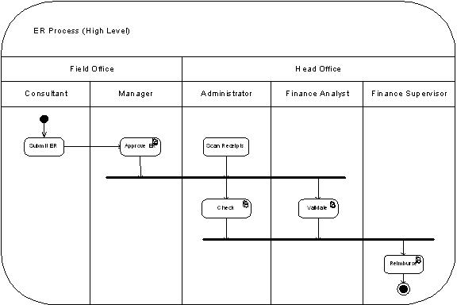
Using the UML 2 activity diagram we can incorporate the swim-lane style representation of participant responsibilities and bound the whole process in a box with round corners. Within the box and swim-lanes we use classic UML flowchart style notation with begin and end markers, connecting solid, directional lines, and synchronization bars. The individual process steps can be adorned with the SOA Service stereotype icon identify specific process Services cooperating with other, non-SOA activities.
Ideally represented as a collection of service components, the service composite diagram is used to represent the interaction between a set of services of different types collaborating to provide a new service.
The orchestration of collections of services, their routing decision, dependencies, etc., are represented by the Composition Sequence model. This second form of interaction diagram (the first appeared in the Service Design Viewpoint section) is the original UML sequence diagram. Little has changed in UML 2 when it comes to the sequence diagram (some extended syntax is provided for describing flow control, sub-flows, message exchange, and lifeline details, often seen with the new frame element that encapsulates the diagram).
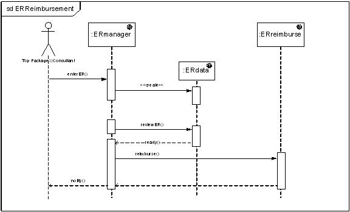
Using a sequence diagram, we can illustrate activations of certain service instances, and show the operation calls and acknowledgments (dotted return lines).
A sequence diagram is an ideal representation for Service Produce Design, offering potentially far more detail than in the simple example shown here. This form of interaction diagram will most likely be the result of a number of iterations in Analysis.
Service Composition takes on more detail during Design when we can show interface dependencies and identify which runtime infrastructure components are expected to provide the various service implementations.
The figure below shows example of a service composition design.
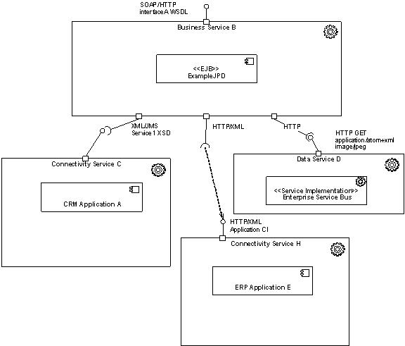
Deployment tends to mean different things to different people in any engineering environment. If we look at the UML deployment diagram definition we see diagramming elements intended to depict hardware (nodes, machines, etc.) in an operational configuration. The layout and composition of the various physical and software components is described explicitly. This form of deployment diagram is useful for creating models within systems and network architectural descriptions. However, there are a number of steps between service (or software) creation and operational deployment. These steps are concerned with packaging and runtime models.
Packaging in the context of SOA Services is concerned with identifying all the parts necessary for service implementation, and organizing them is a way that is best suited for the process of deploying the Service(s) to the target systems. Since the classic deployment model varies according to the environment it is supporting (e.g. development, test, production), a generalized representation is needed to identify the types of infrastructure required by the Reference Architecture. This intermediate model is best represented using UML subsystem diagrams.
In the context of the Service Engineering process, Service Deployment moves us into a new phase of Service Management (see SOA Core Workflow view). Taking Service Contract and Design inputs from earlier phases, the Service Deployment workflow step produces a number of outputs directed towards different stakeholders. The following sections propose three viewpoints
These three viewpoints are intended to address the separate concerns of stakeholders, such as, configuration management and distribution/deployment engineers, infrastructure designers, and system architects. Delineation of these responsibilities is not well standardized and often depends on the size of the enterprise and other non-technical factors. The style which an organization has adopted for development and deployment of non-service oriented software, will likely spill over into how it develops and deploys services. For this reason the use of the models presented here are most likely to be used in other viewpoints, customized to fit the organization structure of the customer’s enterprise.
The meta model for the three diagrams described here is shown below. Here we see the relationships between the packaging, subsystem, and operational deployment representations.
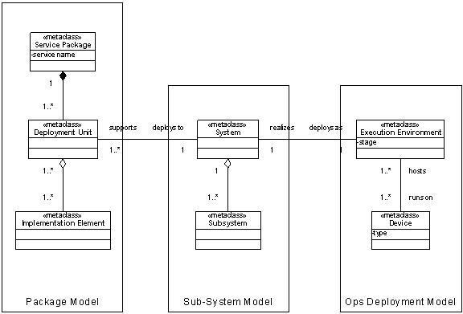
The figure above identifies a number of elements, in meta-class form, that already exist as stereotypes in UML:
The workflow steps for the creation of models from these diagrams are represented below.
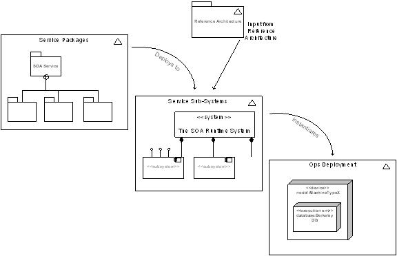
Here we see the Reference Architecture as external input to the subsystem model, which highlights the types of infrastructure subsystems required to support our services, but without the detail of their optional deployment.
Service Packages must map to elements of the runtime system, depicted in the subsystem model, to ensure the system is deployable.
Ultimately the operational deployment models must meet the needs of development, test, and production environments while still conforming to the subsystem model in order to support the deployable services.
The following sections describe three viewpoints corresponding to the three aspects of “deployment” outlined here.
This section provides a description of the Service Packaging viewpoint.
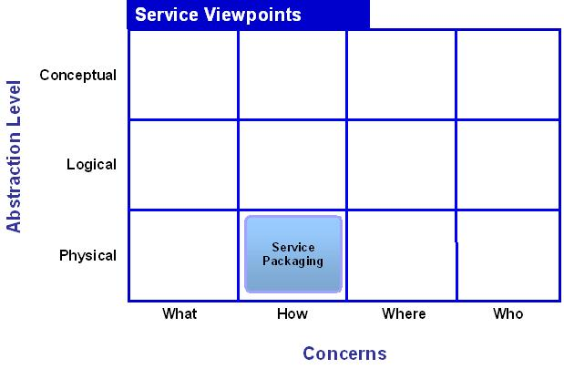
| Typical Stakeholder(s): | Concerns: | Models: |
|---|---|---|
|
|
|
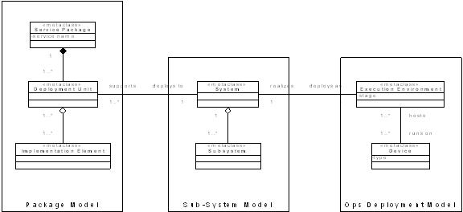
A high-level packaging model is needed to show the mapping of deployable Service Implementation artifacts to their respective subsystem components, as determined by the Reference Architecture. An example of a high-level Service packaging model is shown below.
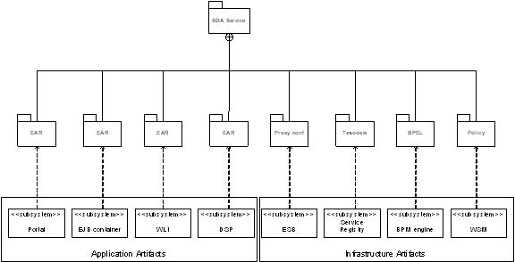
A model of this type serves two important purposes:
Each sub-package in the high-level model above requires substantially more detail than is shown here. More detailed models should be developed to show the types of artifacts that can be expected in each of the high-level sub-packages.
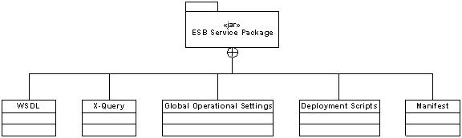
This section provides a description of the Service Runtime viewpoint.
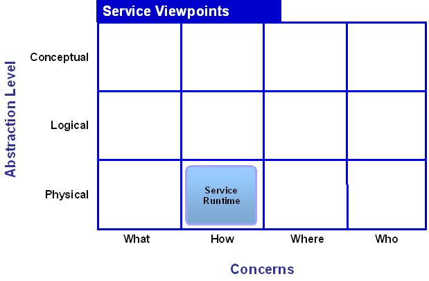
| Typical Stakeholder(s): | Concerns: | Models: |
|---|---|---|
|
|
|

Service Runtime Meta Model
Service Runtime is a description of service interactions during runtime operations following deployment. The Service Runtime Viewpoint provides an opportunity to elaborate on the design descriptions of such things as runtime discovery, subsystem interactions, etc.that may not otherwise be apparent in the (typically static) descriptions of deployment.
Another variation of the interaction diagram reappears in the Service Runtime Viewpoint, showing the relationship between services and subsystems. The diagram below shows an example of a UML 2 sequence diagram including subsystems and their service interfaces.
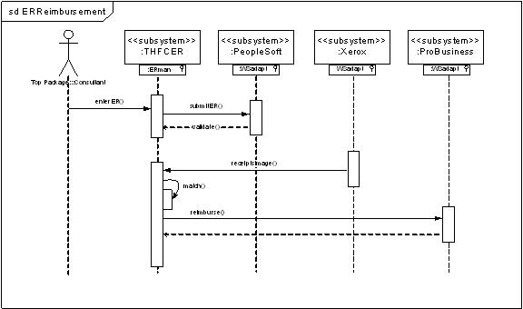
The implementation of services within a chosen set of a SOA infrastructure is also represented by the Service Runtime viewpoint. A UML subsystem diagram is particularly useful for showing these subsystems from a Service Runtime Viewpoint. An example subsystem diagram is shown below.
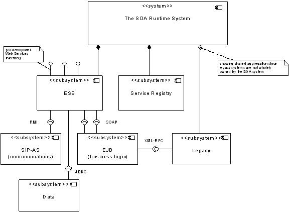
In the Runtime Subsystem Model we can see the containment of the owned subsystems in contrast to the shared aggregation of subsystems beyond the control of the SOA System. Also represented here are various high-level interface specifications showing the types of interaction permitted or expected between subsystems.
Although this representation is a form of implementation, it stops short of identifying nodes or clusters as execution units, leaving this information for the deployment Model.
This section provides a description of the Service Operations Deployment viewpoint.
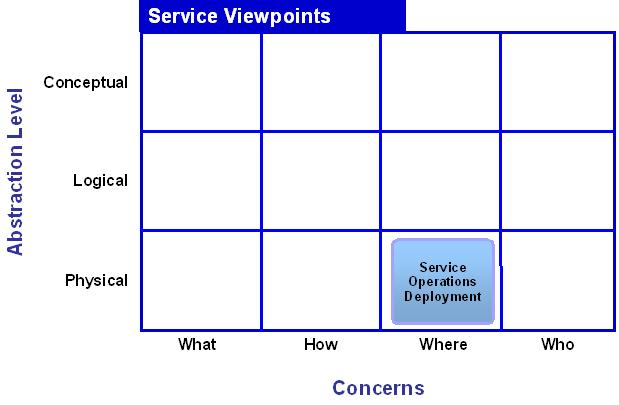
| Typical Stakeholder(s): | Concerns: | Models: |
|---|---|---|
|
|
|

Service Operations Deployment Viewpoint Metal Model
Integration with operational Systems (including logging, monitoring, etc.) in deployment is represented in this viewpoint.
Earlier versions of UML (ver. 1.x) were criticized for limitations in the notation for modeling deployment. UML 2 offers some improvements in this area.
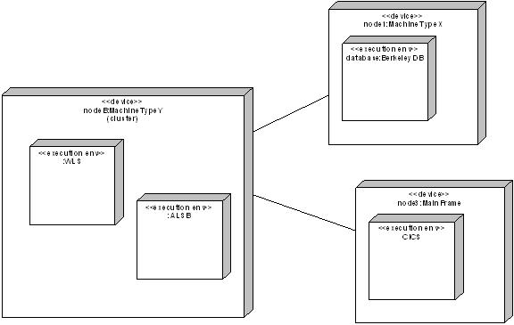
In the deployment Model we are no longer concerned with the messaging interface formats although in many cases the underlying wire protocols are of particular interest to the network operations community. The deployment Model diagram shows types of “execution environments” that expected to be deployed within specific “devices” or device clusters.
This section provides a description of the Service Consumer viewpoint.
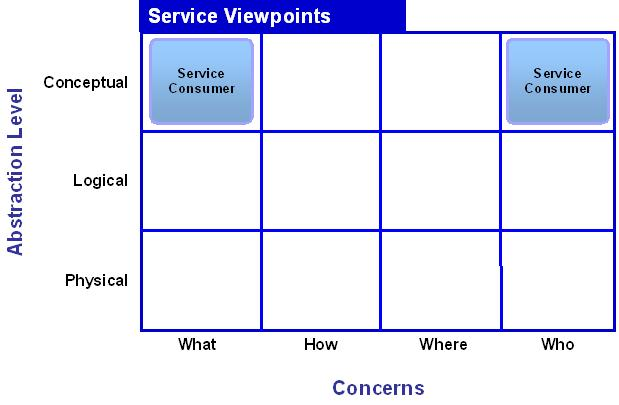
| Typical Stakeholder(s): | Concerns: | Models: |
|---|---|---|
|
|
|
The Service Consumer Contract (aka consumption agreement/contract, and occasionally called “usage agreement”) describes the consumer’s expectations. The mandatory aspects of consumer and provider contracts must match in order for provider and consumer to interoperate.
The service consumer perspective is not addressed directly by the SOA Core Workflow view, although it is inferred in the Service Identification workflow step of the Service Analysis phase. In Service Identification we are directed to look for service reuse opportunities, and it is typical of this procedure that we are required to consider the expression of a Service Contract from the viewpoint of the consumer. The output of this step is a Service Contract and is therefore very similar to the output of the Service Provider Contract step described at the beginning of this chapter.
The Service Consumer Contract is another form of service contract viewed from the perspective of a consumer. In fact many of the characteristics of a Service Producer Contract can be used to express requirements and/or preferences or constraints of a consumer.
As defined by the Service Architecture technique, the Service Producer Contract is an agreement between the service provider and the service infrastructure, while the Service Consumer Contract is an agreement between the consumer and service infrastructure.
The Service Architecture technique definition of contracts enables the decoupling of provider and consumer so the contractual requirements of one may exist without the need for the other; the relationship between these entities can be seen in the diagram below.
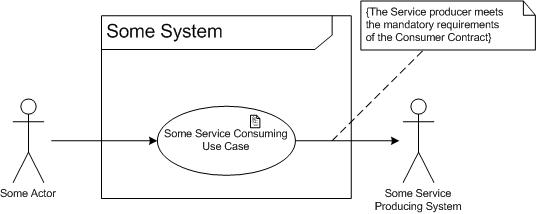
In the figure above, we can see a use case that consumes a service and Service Contract and Service Consumer Agreement. The relationship between provider and the service consuming system (some system) only exists when the constraint, that “the Service Contract meets the mandatory requirements of the Service Consumer Contract”, is met.
While the Service Consumer Contract makes use of much of the same notation as the Service Producer Contract, it is important to recognize the differences arising from the viewpoint of the consumer. Although the example Consumer Contract shown below is very similar in its notation to the Provider contract described previously, it is most likely to focus on supplemental requirements rather than statements of functional needs. This is due to the likely scenario that a potential consumer has discovered a published service and identified a match to his functional requirements without the need for elaborate descriptions. Once this initial discovery has taken place the consumer focuses on the description of interface constraints in an attempt to match specific, policy based, and supplemental requirements of his organization.
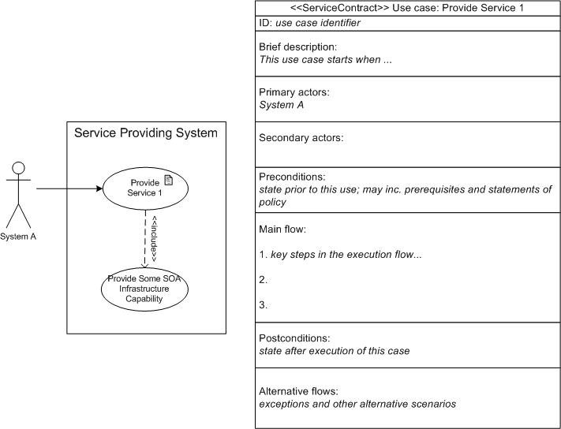
The Service Consumer Contract shown here appears to be simply a mirror image of the Service Producer Contract diagram although the emphasis of the information it represents is changed according to the Viewpoint of the consumer.
UML is “a specification defining a graphical language for visualizing, specifying, constructing, and documenting the artifacts of distributed object systems.” For further reading on UML, see the References.
UML stands for Unified Methodology Language. In the eighties there were several different and independent methodologies. At one point, the founders of each of them got together and agreed to “unify” them into one standard approach with one common set of symbols.
UML is a general-purpose modeling language that includes a graphical notation used to create a set of diagrams of a system, referred to as a UML model. UML is designed to specify, visualize, construct, and document software-intensive systems. UML is defined and maintained by the Object Management Group (OMG) using a Meta-Object Facility (MOF) meta model. Like other MOF-based specifications the UML meta model and UML models may be serialized in XMI for transfer of models between tools.
UML is made up of modeling elements (shaped boxes), relationships (various connecting line formats), and a set of diagrams that are constrained by rules to provide models making up architectural descriptions. The diagram types are categorized into structure (nouns) and behavior (verbs). The figure below uses a UML class diagram to show a high level summary of the UML 2 diagram types and the separation between structure and behavior.
UML 2 Diagram Types
This diagram shows the full thirteen diagrams of UML 2 with those diagrams that are new to version 2 shown in blue. Most of the original UML 1 diagrams (in red) have been updated, in varying degrees, in version 2 and the original “collaboration diagram” of UML 1 has been replaced by the set of interaction diagrams that include the original sequence diagram. Diagram types are shown in gray.
UML versions 1.4.1 and 1.5 enjoy widespread support from tools vendors and are universally know (in varying degrees) in information and communication technology environments. UML Version 2 was finalized in 2004 with the primary goal of filling some important gaps in the prior versions, in particular process and deployment modeling; Version 2 has thirteen diagrams while UML 1.x had nine. The biggest practical difference currently is that UML 2.0 suffers poor support from tools vendors.
Refer to the Object Management Group (OMG) resources for language specifications.
UML has been a catalyst for the evolution of model-driven technologies, which include Model Driven Development (MDD), Model Driven Engineering (MDE), and Model Driven Architecture (MDA). MDA requires heavy investment in tooling and process and has seen limited adoption in IT. It is not our intention to endorse or recommend MDA merely by our association with UML.
UML is not restricted to modeling software; it is also used for business process modeling, systems engineering modeling and representing organizational structures. For example the Systems Modeling Language (SysML) is a Domain-Specific Modeling language for systems engineering that is defined as a UML 2.0 profile.
UML is extensible, offering the following mechanisms for customization:
The semantics of extension by profiles have been improved with the major revision UML 2.0.
By using these standard mechanisms for creating extensions or increasing specificity within a domain, supporting tools should not be adversely affected and in many cases should even be able to apply the new constraints of the language extension.
UML is not a method by itself, but is typically used in conjunction with various software engineering methods. Developed by Grady Booch, James Rumbaugh, and Ivar Jacobson the UML was originally integrated with the Rational Unified Process (now owned by IBM). A non-proprietary version is widely used and adapted in the form of the Unified Process (UP).
Other examples of software engineering methods using UML include:
Similarly, this technique uses a modeling approach intended for use primarily with the OUM’s SOA Core Workflow view but may also be used with other software engineering methods.
Many other modeling languages and notations exist and while some may be used directly by OUM (for example, BPMN in the Functional or Process Modeling technique) others may be found in customer environments. Examples of other modeling languages include:
It may be possible (and perhaps necessary) in some circumstances to adapt this approach to alternative modeling languages/notation although in most cases some loss of functionality will result (for example, ERD is ideal for modeling data relationships but is incapable of representing behavior).
The original version of UML was adopted by the OMG as a standard in 1997. UML version 1.4.2 (OMG document formal/05-04-01) was accepted as an ISO standard in 2005.
UML 1.4.2 is available as ISO/IEC 19501 and ITU-T Recommendations Z.100 (SDL) and Z.109 (SDL UML profile).
UML version 2 was originally released in 2004 and the current version (as of February 2007) is 2.1.1.
Many tools are useful for modeling: these ranging from rudimentary drawing packages to full blown capabilities such as UML consistency validation, code generation, Model Driven Architecture/Development (MDA / MDD). Some tools are strictly tied to specific Software Development Lifecycle (SDLC) methods such as the relationship between IBM’s Rational Rose and the Rational Unified Process. Some tools are merely drawing packages allowing the unconstrained presentation of shapes and connectors such as PowerPoint. The tool used in this document, and recommended for most scenarios as a “lowest common denominator” is Visio. Visio provides some support for UML v1 while UML2 templates are also available.
Since the release of version 1 the UML framework has offered simple extension techniques that allow us to extend the language, for domain specific purposes, without changing the underlying meta model. The primary extension features are:
The Profiles package contains mechanisms that allow meta-classes from underlying UML meta models to be extended to adapt them for different purposes. This allows us to tailor the UML meta model for different platforms (such as, J2EE or.NET) or domains (such as business process modeling or SOA!).
The new profile mechanism enables us to package our extension definitions using the original three capabilities.
Each stereotype in a profile extends an underlying meta model element, such as Class or Link, and may introduce tags and constraints that were not part of the original meta model.
The “Profiles package” in the Object Management Group (OMG) UML definition (see References ) contains mechanisms that allow meta-classes from existing meta models to be extended to adapt them for different purposes. This includes the ability to tailor the UML meta model for different platforms or domains (such SOA or Business Process Modeling). In this way UML offers several extension mechanisms to enable modelers to describe new and specific situations (such as SOA services) without changing the underlying modeling language.
The primary goal of the designers of UML was to enable extensions to be introduced without breaking existing tooling that may not understand the semantics and purpose of the extension. In general it is expected that tools and add-ons will be created to process various UML extensions to perform more specific tasks (such as checking the validity of a service composition); however tools are not required to create or use extensions as long as all its users are aware of it and care is taken to apply its principles.
Extensions are organized into profiles, where a profile is a set of extensions applicable to a given domain or purpose. The mechanisms used in a UML profile are stereotypes, tags (and tagged values), and constraints.
Care must be taken in using these mechanisms since the resulting profile represents a dialect specific to a particular application domain or engineering environment and may conflict with other profiles or even standard use of UML.
According to the OMG, a UML profile is a specification that does one or more of the following:
“Well-formedness rule” is a term used in the normative UML meta model specification to describe a set of constraints written in UML’s Object Constraint Language (OCL) that contributes to the definition of a meta model element.
“Standard element” is a term used in the UML meta model specification to describe a standard instance of a UML stereotype, tagged value or constraint.
OMG publishes formal profiles such as UML Profile for Enterprise Application Integration (EAI) and UML Profile for Enterprise Distributed Object Computing (EDOC). A complete list of OMG standardized profiles can be found Catalog of UML Profile Specifications.
UML allows vendors and users to extend the language through profiles, which customize the language through the use of stereotypes, tagged values, and constraints.
UML v2 already has a stereotype <<service>> defined as “a stateless, functional component” in the package Components:BasicComponents (see UML 2.1.1 Superstructure Specification). Resolved: we have agreed to use the stereotype <<soaservice>> instead.
A notable weakness of UML in describing XML based structures in the simplistic packaging strategy for representing XML namespaces.
| No. | Reference |
|---|---|
| 1 | Agile Model Driven Development (AMDD) |
| 2 | IEEE 1471 Recommended Practice for Architectural Description of Software-Intensive Systems http://standards.ieee.org/reading/ieee/std_public/description/se/1471-2000_desc.html |
| 3 | ITU-T Recommendations Z.100 (SDL) http://www.itu.int/itudoc/itu-t/aap/sg17aap/history/z.100/index.html and Z.109 (SDL UML profile) http://www.itu.int/rec/T-REC-Z.109/en |
| 4 | OASIS (Organization for the Advancement of Structured Information Standards) is a not-for-profit consortium that drives the development, convergence and adoption of open standards for the global information society. The consortium produces more Web services standards than any other organization along with standards for security, e-business, and standardization efforts in the public sector and for application-specific markets. Founded in 1993, OASIS has more than 5,000 participants representing over 640 organizations and individual members in 100 countries. OASIS: http://www.oasis-open.org/home/index.php OASIS Reference Model for Service-Oriented Architecture V1.0: http://www.oasis-open.org/committees/download.php/19679/soa-rm-cs.pdf OASIS Web Services Security Technical Committee (WSS TC): http://www.oasis-open.org/committees/tc_home.php?wg_abbrev=wss#technical OASIS Document Repository |
| 5 | Object Management Group (OMG) - OMG™ is an international, open membership, not-for-profit computer industry consortium. OMG Task Forces develop enterprise integration standards for a wide range of technologies, and an even wider range of industries. OMG’s modeling standards enable powerful visual design, execution and maintenance of software and other processes. OMG’s middleware standards and profiles are based on the Common Object Request Broker Architecture (CORBA®) and support a wide variety of industries. All of their specifications may be downloaded without charge from their web site. The Object Management Group: http://www.omg.org/ Catalog of OMG Business rules and Process Management Specifications: http://www.omg.org/technology/documents/br_pm_spec_catalog.htm OMG Unified Modeling Language (UML), version 2.1.1: http://www.omg.org/technology/documents/formal/uml.htm Catalog of OMG Modeling and Metadata Specifications: http://www.omg.org/technology/documents/modeling_spec_catalog.htm Catalog of UML Profile Specifications: http://www.omg.org/technology/documents/profile_catalog.htm |
| 6 | UML References Visio UML2 Extensions: http://www.softwarestencils.com/uml/index.html http://en.wikipedia.org/wiki/List_of_UML_tools UML 2.1.1 Superstructure Specification: http://www.omg.org/technology/documents/formal/uml.htm UML 1.4.2 is available as ISO/IEC 19501: http://www.iso.org/iso/iso_catalogue/catalogue_tc/catalogue_detail.htm?csnumber=32620 Catalog of UML Profile Specifications: http://www.omg.org/technology/documents/profile_catalog.htm |
| 7 | Unified Modeling Language Reference Manual, Second Edition by Rumbaugh, Jacobson, Booch (Addison-Wesley) |
| 8 | The Web Services Interoperability Organization (WS-I) is an open industry organization chartered to establish Best Practices for Web services interoperability, for selected groups of Web services standards, across platforms, operating systems and programming languages. The Web Services Interoperability Organization (WS-I): http://www.ws-i.org/ |
| 9 | The World Wide Web Consortium (W3C) develops interoperable technologies (specifications, guidelines, software, and tools) to lead the Web to its full potential. W3C is a forum for information, commerce, communication, and collective understanding. The World Wide Web Consortium (W3C): http://www.w3.org/ Web Services Policy: http://www.w3.org/Submission/WS-Policy/ Web Services Architecture: http://www.w3.org/TR/ws-arch/ Web Services Requirements: http://www.w3.org/TR/wsa-reqs/ W3C Glossary: http://www.w3.org/TR/wsa-reqs/#ws-gloss Uniform Resource Identifiers (URI): http://www.w3.org/TR/wsa-reqs/#RFC2396 |
There are no templates available to assist with this technique.
This technique is recommended for use in the following OUM tasks:
| Task | Usage |
|---|---|
| Review this technique as input into this task for a SOA Modeling Planning engagement. | |
Use the following criteria to check the quality usage for this technique:

Copyright © 2006, 2016, Oracle and/or its affiliates. All rights reserved.